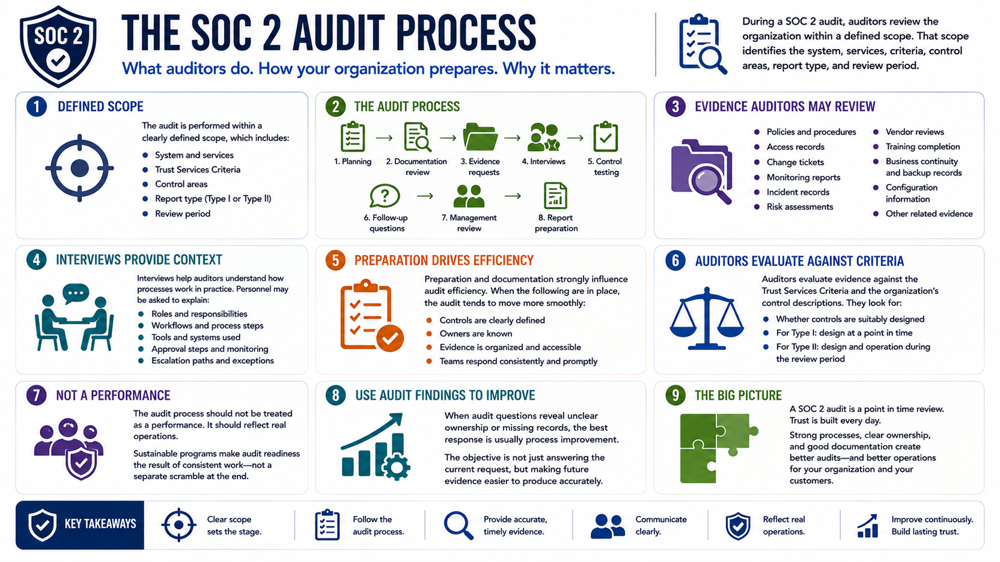

What Is SOC 2?
The Audit Process
Connecting to LMS... Progress: in progress
Version 1.0 | Date: 2026-06-16 | Educational overview of SOC 2 concepts, controls, evidence, and trust.

Narration
During a SOC 2 audit, auditors review the organization within a defined scope. That scope identifies the system, services, criteria, control areas, report type, and review period.
The audit process usually includes planning, documentation review, evidence requests, interviews, control testing, follow-up questions, management review, and report preparation.
Auditors may examine policies, procedures, access records, change tickets, monitoring reports, incident records, risk assessments, vendor reviews, training completion, and other evidence connected to the control set.
Interviews help auditors understand how processes work in practice. Personnel may be asked to explain responsibilities, workflows, tools, approval steps, monitoring, escalation paths, or how exceptions are handled.
Preparation and documentation strongly influence audit efficiency. When controls are clearly defined, owners are known, evidence is organized, and teams respond consistently, the audit tends to move more smoothly.
Auditors evaluate evidence against the criteria and the organization's control descriptions. They are looking for whether controls are suitably designed and, for Type II reports, whether they operated during the review period.
The audit process should not be treated as a performance. It should reflect real operations. Sustainable programs make audit readiness the result of consistent work, not a separate scramble at the end.
When audit questions reveal unclear ownership or missing records, the best response is usually process improvement. The objective is not just answering the current request, but making future evidence easier to produce accurately.